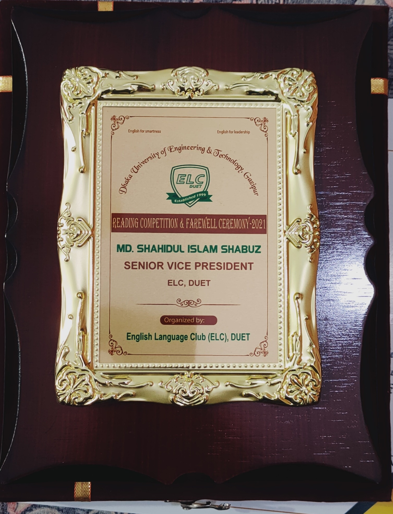
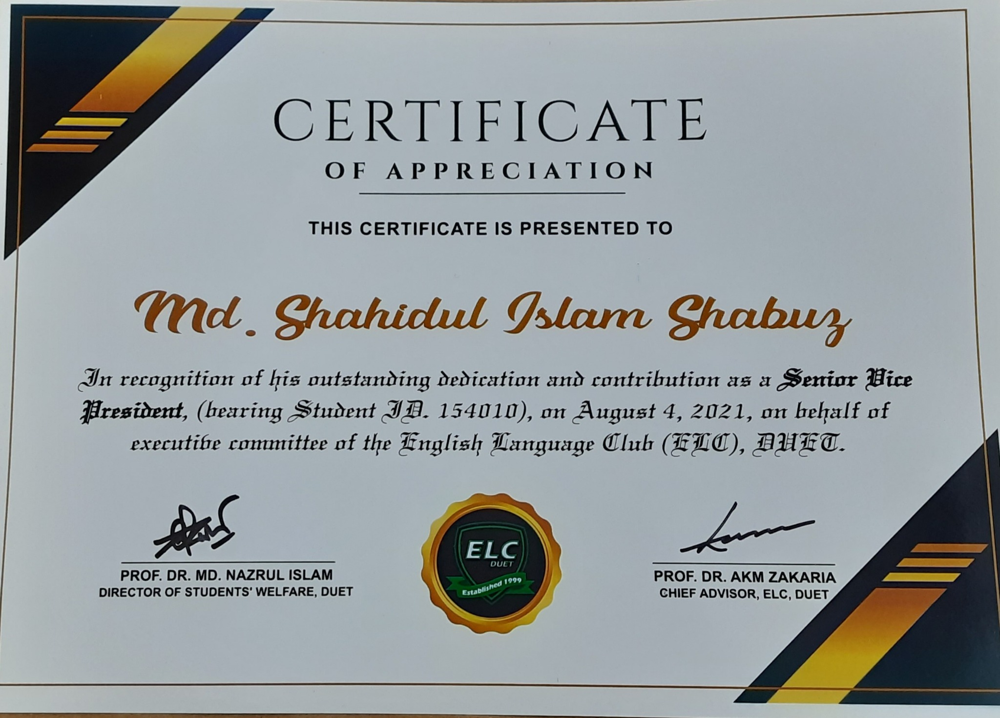
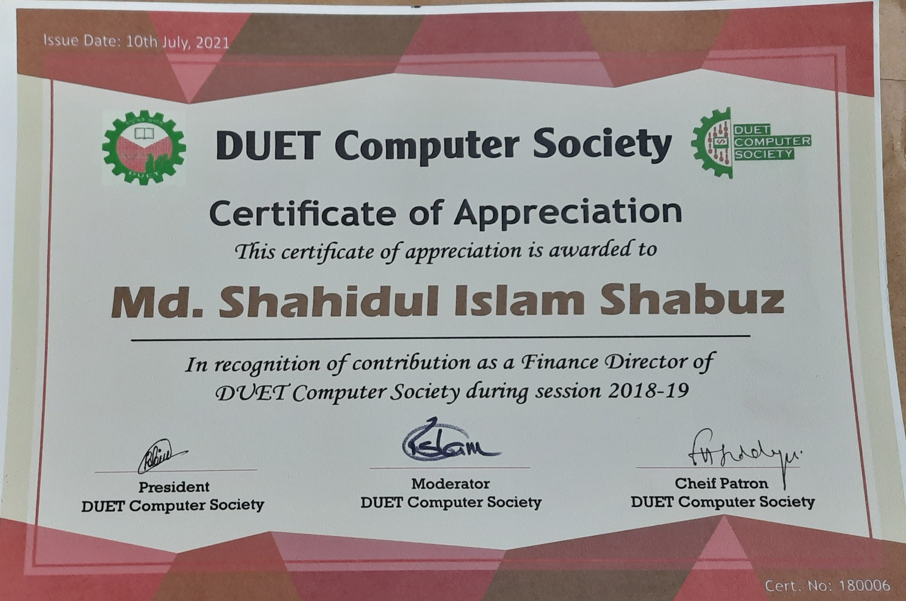
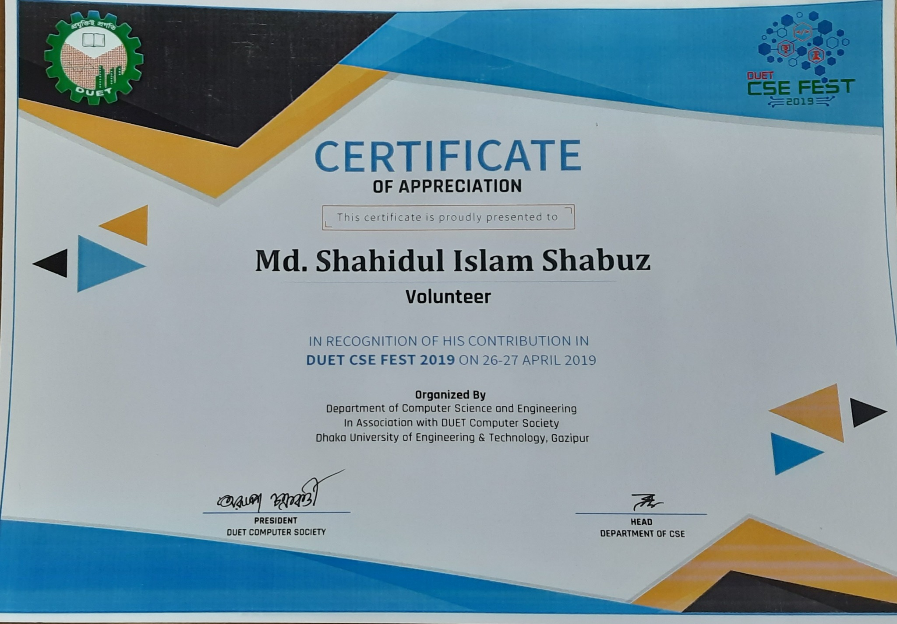

Moderator
RSTU Computer Club
Support student-led computing activities, technical learning, event planning and professional development within the university community.
Leadership & Mentorship
My leadership experience includes student-club administration, English-language development activities, technical-event service and undergraduate project supervision. These roles strengthened my communication, teamwork, financial management and student-mentoring skills.
Leadership Roles
RSTU Computer Club
Support student-led computing activities, technical learning, event planning and professional development within the university community.
English Language Club (ELC), DUET
Contributed to English-language activities, student engagement, organizational coordination and the club's executive responsibilities.
DUET Computer Society
Contributed to financial coordination and organizational activities of the university's student computing society.
DUET CSE Fest 2019
Supported the Department of CSE and DUET Computer Society in organizing the university's CSE Fest.
Academic Mentorship
Student: Md. Marzan Haque · Supervisor: Md. Shahidul Islam Shabuz
BookCycleBD is a responsive peer-to-peer marketplace for buying and selling second-hand books in Bangladesh. The project addresses expensive academic books and the limitations of unstructured social-media groups and general classified platforms.
The completed platform supports registration and authentication, structured book advertisements, image upload, book-specific search and filtering, buyer-seller messaging, seller dashboards and administrative moderation.
Evidence of Service
Select an image to open the full-resolution certificate.




Academic Service
These experiences complement my academic work by demonstrating responsibility, communication, mentoring and sustained engagement with student communities.